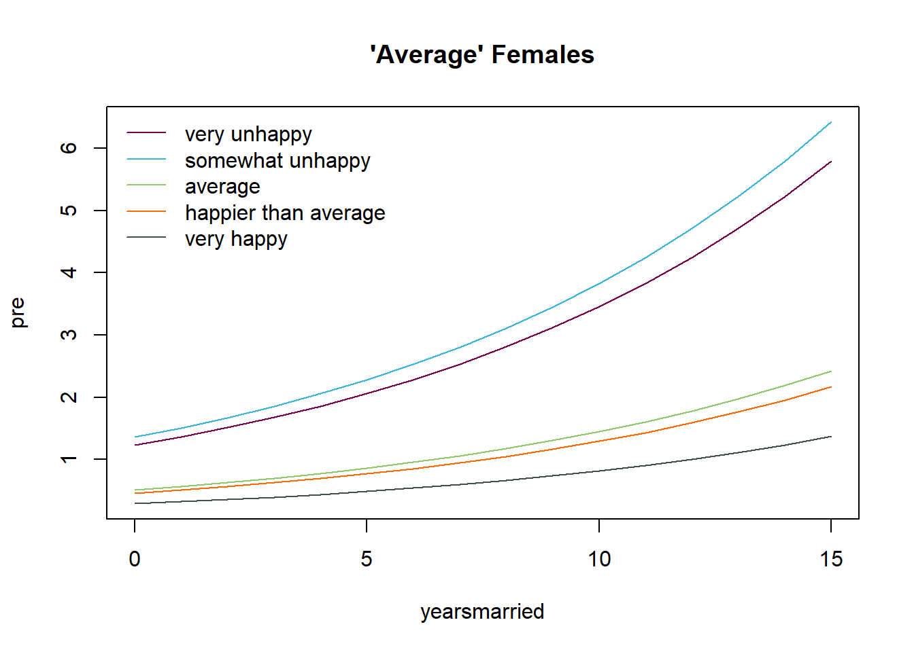

Chapter 2 Generalized linear models
This chapter gives a hands-on introduction to generalized linear models with a focus on logistic regression for binary response data and poisson regression for count data.
2.2 Exercises
Exercise 1
In a psychophysical experiment two LEDs are presented to a subject: a standard with 40 cd/m\(^2\) and a comparison with varying intensities
The subject is supposed to say which stimulus is brighter; each comparison is presented 40 times
x (cd/m\(^2\)) 37 38 39 40 41 42 43 y (positiv) 2 3 10 25 34 36 39 Estimate parameters \(c\) and \(a\) of the logistic psychometric function \[ p_{pos} = \frac{1}{1 + \exp(-\frac{\displaystyle x - c}{\displaystyle a})} \] using
glm()with \(logit(p_{pos}) = \beta_0 + \beta_1x\) where \(a = 1/\beta_1\) and \(c = -\beta_0/\beta_1\).Calculate the intensity \(x\) for which \(p_{pos} = 0.5\) (Point of Subjective Equality, PSE)
Create a plot for the probability to give a positive answer depending on the intensity of the comparison
Use
predict()to obtain the predicted values and add the logistic psychometric function to the plotUse
abline()to add parameter \(c\) to the plotUse a likelihood ratio test to assess how well the model fits the data
Is there reason to assume that there is any overdispersion?
Code
dat <- data.frame(x = 37:43,
y = c(2, 3, 10, 25, 34, 36, 39),
n = 40)
glm1 <- glm(cbind(y, n - y) ~ x, family = binomial, data = dat)
a <- 1 / coef(glm1)[2]
c <- -coef(glm1)[1] / coef(glm1)[2]
newx <- seq(37, 43, .1)
pre <- predict(glm1, newdata = data.frame(x = newx), type = "response")
# Plot predictions with PSE
plot(y/n ~ x, data = dat, pch = 16, ylab = "Probability to say brighter")
lines(pre ~ newx, data = dat)
abline(v = c, h = .5, lty = 3)
text(39, .8, paste("PSE =", round(c, 2)))Code
# Goodness-of-fit test
glms <- glm(cbind(y, n - y) ~ factor(x), family = binomial, data = dat)
anova(glm1, glms, test = "Chisq")
# Overdispersion
summary(glm(cbind(y, n - y) ~ x, family = quasibinomial, data = dat))Exercise 2
Fit a regression model to the
Affairsdata set from theAERpackage in RThe variable
affairsis the number of extramarital affairs in the past year and is our response variableInclude the variables
gender,age,yearsmarried,children,religiousness,educationandratingas predictorsreligiousnessranges from 1 (anti) to 5 (very) andratingis a self rating of the marriage, ranging from 1 (very unhappy) to 5 (very happy)Assess the Goodness-of-fit using the deviance
Assess overdispersion and decide if a model with an extra dispersion parameter might be indicated
Compare the confidence intervals for the estimated parameters for both models
Code
# Load data set
data(Affairs, package = "AER")
Affairs$rating <- factor(Affairs$rating, levels = 1:5)
## Fit poisson model
pois1 <- glm(affairs ~ gender + age + yearsmarried + children + education +
rating, family = poisson, data = Affairs)
summary(pois1)
# Goodness-of-fit
1 - pchisq(pois1$deviance, df = pois1$df.residual)
## Model with dispersion parameter
pois2 <- glm(affairs ~ gender + age + yearsmarried + children + education +
rating, family = quasipoisson, data = Affairs)
summary(pois2)
## Compare CIs
confint(pois1)
confint(pois2)Visualize model predictions
Code
## Plot predictions for "average" females
newdat <- expand.grid(yearsmarried = seq(0, 15, 1), rating = factor(1:5))
newdat$gender <- "female"
newdat$age <- mean(Affairs$age)
newdat$children <- "yes"
newdat$religiousness <- mean(Affairs$religiousness)
newdat$education <- mean(Affairs$education)
newdat$pre <- predict(pois2, newdata = newdat, type = "response")
colors <- c("#78004B", "#3CB4DC", "#91C86E", "#FF6900", "#434F4F")
plot(pre ~ yearsmarried, newdat, type = "n", main = "'Average' Females")
for (i in 1:5) {
lines(pre ~ yearsmarried, newdat[newdat$rating == i, ], col = colors[i])
}
legend("topleft", c("very unhappy", "somewhat unhappy", "average",
"happier than average", "very happy"),
col = colors, lty = 1, bty = "n")